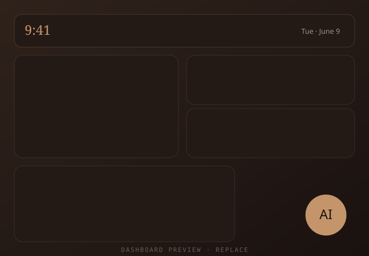
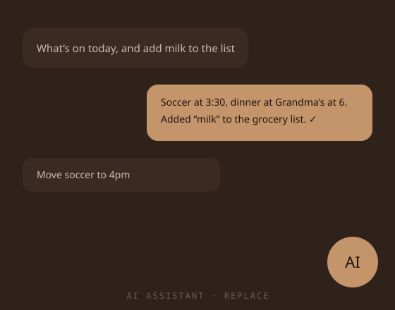
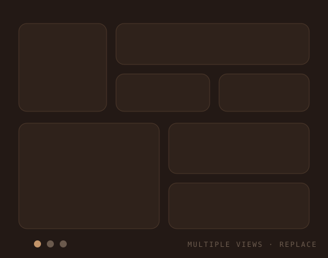
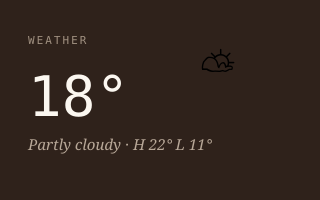
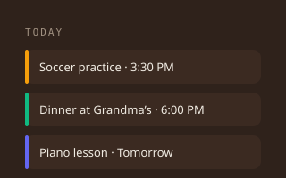
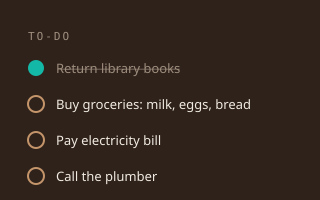
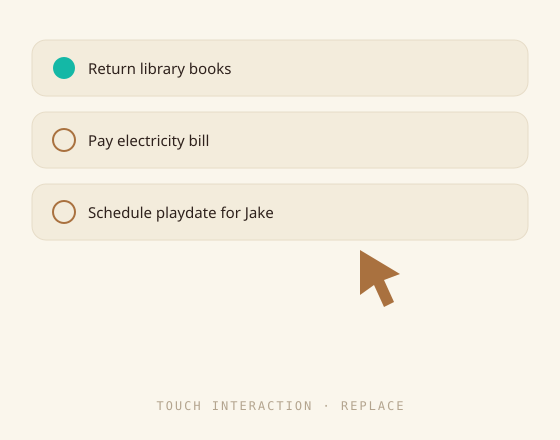
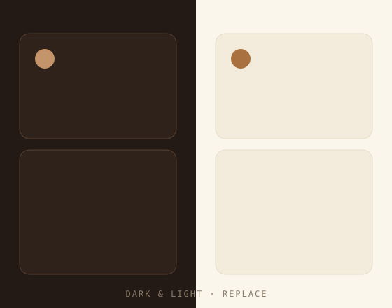

Open-source smart-mirror for the home
Family Hub is a warm, wall-mounted home dashboard that runs on a Raspberry Pi — weather, calendars, to-dos and an AI assistant, all in one hearth-lit place. Every panel is a plug-in module, and the assistant can drive any of them.
Runs offline on a Pi · Node for dev, Bun in production · MIT-spirited

AI-driven management
Ask in plain language — “what’s on today?”, “add milk to the list”, “move soccer to 4pm” — and the assistant does it. It reads a live registry of every panel’s capabilities, so it works with built-in widgets and any custom module you add, with zero extra wiring.

100% customizable
Drag panels where you want them and size them to fit your wall. Build multiple dashboards — a busy morning view, a quiet evening view, a kids’ view — and switch between them. Nothing is hard-coded; the layout is yours.

In the box
Family Hub ships with the panels a household actually reaches for — already wired to the real services, not just mock data.

Local forecast via Open-Meteo — no API key. Night-aware icons, highs & lows, UV, °C or °F.
Shipped
Connect Google accounts and ICS subscriptions. Merged, day-grouped agenda with event creation.
Shipped
Shared family to-dos synced with Google Tasks — check things off from the wall or your phone.
ShippedBuild your own
Drop a folder under modules/ with a manifest and a panel, and the core
loads it at boot. Generators kickstart the boilerplate so you write only the
interesting part — and any capability you register is automatically AI-assistable.
# scaffold a new panel $ pnpm gen:module chores # manifest.ts — the whole contract export default { name: "chores", title: "Chore Wheel", hasFrontend: true, hasBackend: true, } # register a capability → the AI can now use it ctx.capabilities.register({ name: "assign_chore", description: "Assign a chore to a family member", handler, })
Hands-on
Most smart mirrors just show you things. Family Hub talks back. Tap a task to complete it, add an event right on the glass, ask the assistant a question — every change syncs live across the screen over WebSockets.

Designed with taste
Family Hub looks like a hearth, not a server rack — warm copper on dark brown, serif accents, soft panels. It’s a considered design out of the box, but the whole palette lives in one theme file. Change a handful of colors and the entire hub follows.

Get started
Clone the repo, run pnpm dev, and open it on any screen. When you’re ready,
point it at a Raspberry Pi and let it run the household.